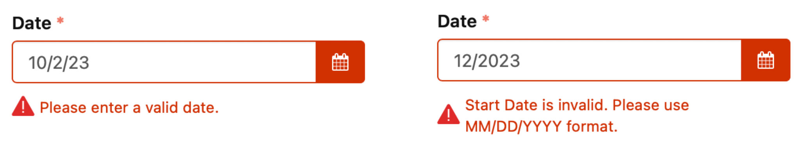
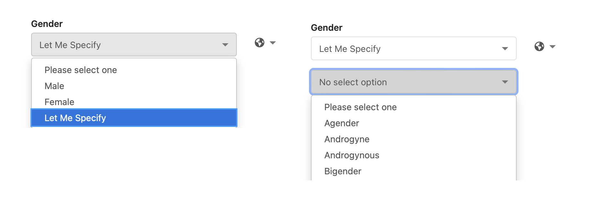
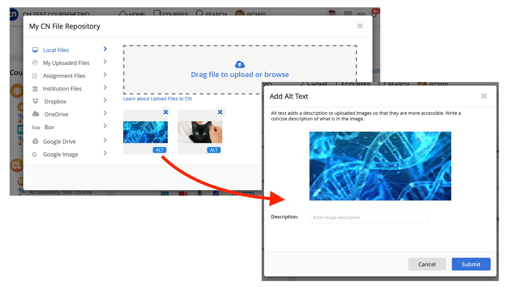
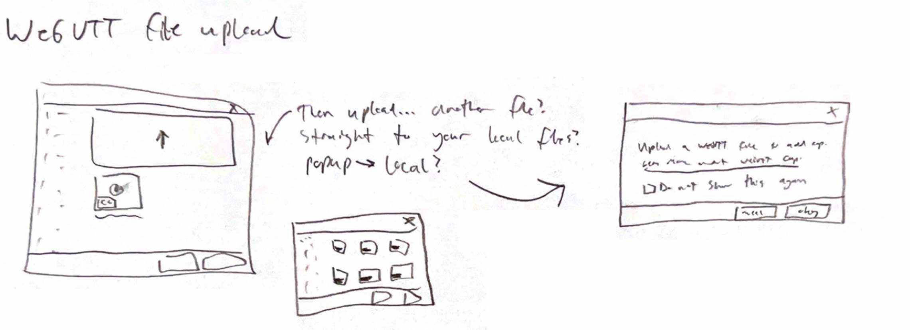

The Process:
WCAG:
Since 2020, I undertook a project to ensure that our website was accessible according to the Web Content Accessibility Guidelines (WCAG) 2.0 standard. These are meant to ensure that people with disabilities are able to use the site, but following them also makes the website much easier to navigate generally.
This process began with me researching the standards and understanding how they might apply to our site. This was a months long process of research of the standards, working with resources from the previous designer, and working with developers on updating front and back-end elements.
The impact of this process was significant. We are able to fix many accessibility issues with our site, and we were able to add new features to make the site easier to use for all users, such as detailed and direct Error Messages. We published these findings in a Voluntary Product Accessibility Template (VPAT), allowing us to secure 2 new client contracts that required it.
Gender Form Field:
One issue we found regarding safety was the misuse of the gender form field. To allow for freedom of expression, we allowed users to define custom inputs for their gender, but this led to a few users making crude jokes to demean others based on their gender identity.
Ultimately, we designed a dropdown form of about 80 options, drawn from multiple sources that list gender identities. We have also added options based on user feedback. This change has impacted our product by allowing flexibility of expression while also reducing avenues of harm on CN. Along with this new form, we have continued to monitor the site for hateful content.
Alt text:
To allow for a greater level of accessibility to users that navigate with screen readers, we implemented an interface that allowed users to add user-defined HTML alt text to their uploaded images. Because all images on our social learning platform are user-uploaded, we had no way of defining alt text for them, which made it more difficult for people using a screen reader to understand the content. By providing this option, we aimed to make CN more accessible and inclusive.
To implement this feature, we researched how other sites allowed users to add alt text. During the design process, we chose to allow users to add alt text to any image they had uploaded in their file repository on CN using a simple "ALT" button. We also ensured that the process passed testing and WCAG standard.
WebVTT Captions
TBased on our research from adding alt text to our site, we wanted to allow users to upload captions to videos as well. To facilitate this, we chose the common caption file system WebVTT and implemented them into our video player. The user flow of this interface was modeled after our researched and testing alt text interface for images.
We developed this system to pass usability and WCAG testing as well. Paired with out alt text interface, we drastically expanded the accessibility of user-generated content for disabled users on our site.
Conclusion
Through this process, I learned a significant amount about the complex and technical details of WCAG, as well as the multitude of reasons that web accessibility options are important. Accessibility options are important for people with mental or physical disability, but also help people holding a baby, in a loud room, or that are getting older.
By implementing features such as gender form field fixes, alt text for images, WebVTT captions for user-generated videos,and removing harmful content from CN, I was able to make our product more accessible and welcoming for all of our users.